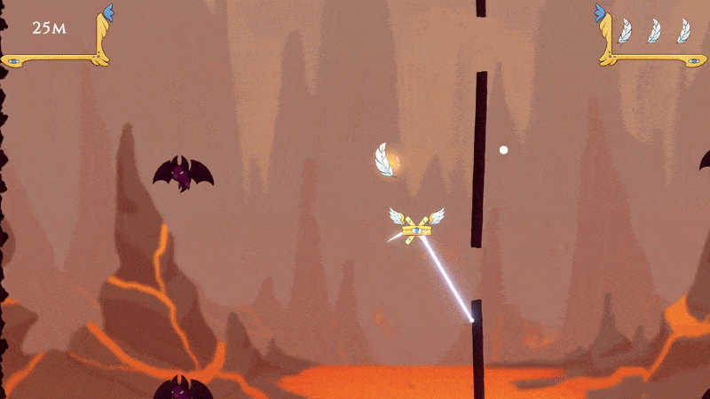
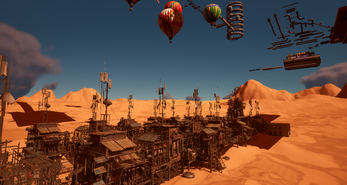
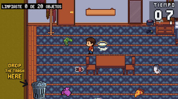

Hello!
I'm Juan Martin Cieri, a Game & Systems Programmer specialized in systems architecture, movement mechanics, and performance optimization in Unity and Unreal Engine.
Got an interesting project or opportunity? Send me a message at
juanchocieri1@gmail.com
Background
I'm a Game & Systems Programmer based in Mendoza, Argentina. I lead technical development across independent games and Game Jams under Cieri.exe, and have worked in standardized production pipelines at Xowen Studio.
I'm currently finishing my Associate Degree in Game Development at Universidad de Mendoza, building upon my background in Information Systems Engineering at UTN. I love turning game design concepts into responsive mechanics, writing modular architectures, and optimizing frame rates using tools like Nanite, LODs, and World Partition.
Skills
Languages
- C#
- C++
- Blueprints (UE5)
Engines & Tech
- Unity (WebGL, Scriptable Objects, Scene Mgmt)
- Unreal Engine 5 (Nanite, LODs, World Partition)
Tools
- Git & GitHub
- Diversion
- Anchorpoint
- Aseprite & Krita
Fields
- Gameplay Mechanics
- Systems Architecture
- State Machines (FSM)
- UI/UX & AI Behavior
- Performance & QA
Featured Projects

Soul Ascension: Inverse
- Designed and implemented the core "Grappling Hook" mechanic and 2D locomotion, optimizing game feel and movement precision.
- Developed an Endless Loop procedural level generation system.
- Programmed and implemented the general game UI and state flow.
Chalkscape
Game Developer- 3D minimalist puzzle game centered around drawing geometric shapes on a chalkboard to solve spatial navigation puzzles.
- Designed and programmed interactive chalkboard drawing mechanics, spatial visual feedback, custom shaders, and core puzzle validation systems.

Ascenso
Solo Developer- Developed the core gameplay system using Blueprints in Unreal Engine 5, prioritizing component modularity.
- Optimized rendering and large-scale asset management using Nanite, LODs, and World Partition to ensure stable 60 FPS performance.
Ritos y Retos
Gameplay Programmer- Fast-paced Mayan ritual micro-games title developed with a modular architecture in Unity (C#).
- Implemented a dynamic scene management architecture to control flow and difficulty scaling across multiple minigames.
- Programmed win/loss validation systems, session data persistence for player progress tracking, and general game UI.

10 Segundos para el Bardo
Gameplay Programmer- 2D time-attack arcade game developed in Unity (C#) where players have 10 seconds to tidy up a room under extreme time pressure.
- Programmed interactive object grabbing, drag-and-drop placement logic, and collision detection systems.
- Implemented the countdown timer state machine, score/cleanup progress tracking (0 to 20 objects), and fast round loop transitions.
Experience & Education
Xowen Studio
Mendoza, ARProgrammer & Designer
- Developed and implemented mechanics and features in Unreal Engine 5 projects, prioritizing technical problem-solving and optimization.
- Participated in the full development pipeline, applying standardized game production methodologies.
- Completed 192 hours of certified technical training in Game Programming and Production, endorsed by Xowen Studio and the Ministry of Production of Mendoza.
Universidad de Mendoza (UM)
Feb 2025 - PresentAssociate Degree in Game Development
Universidad Tecnológica Nacional (UTN)
Feb 2021 - 2024Information Systems Engineering (Partial Studies)